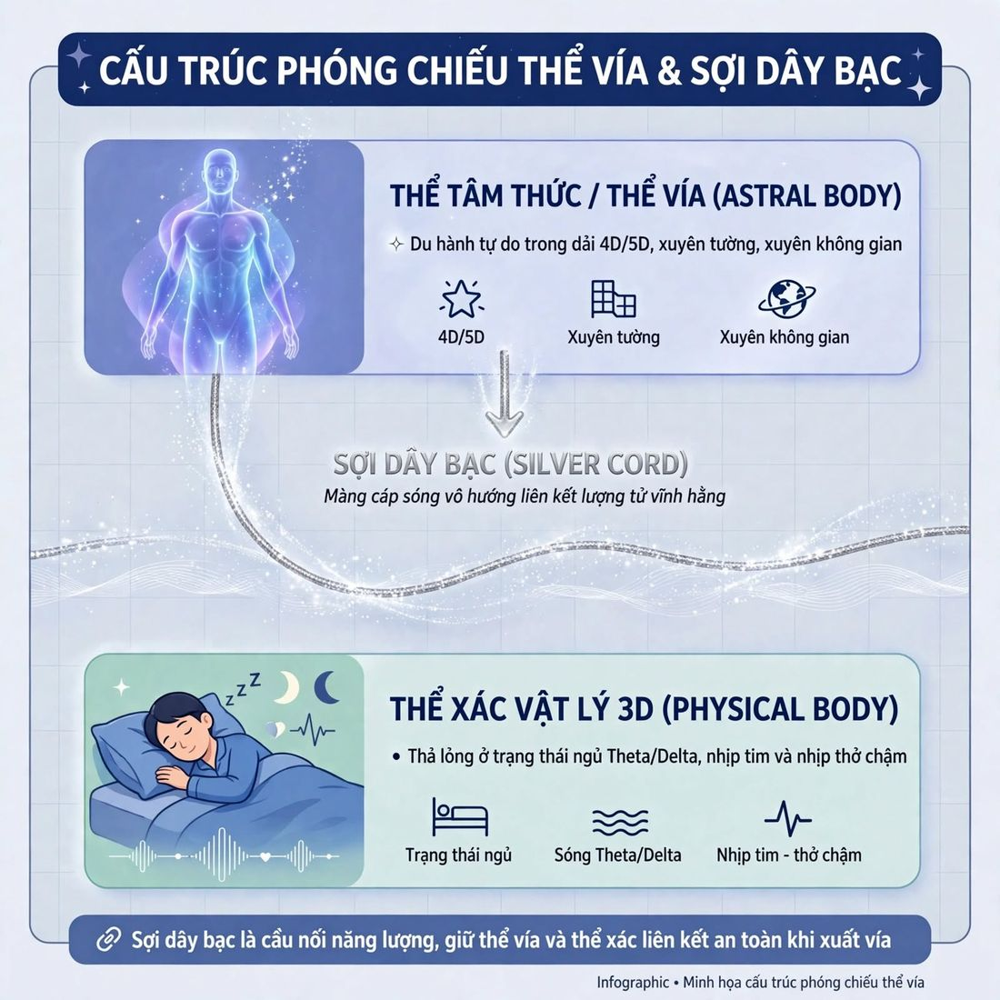
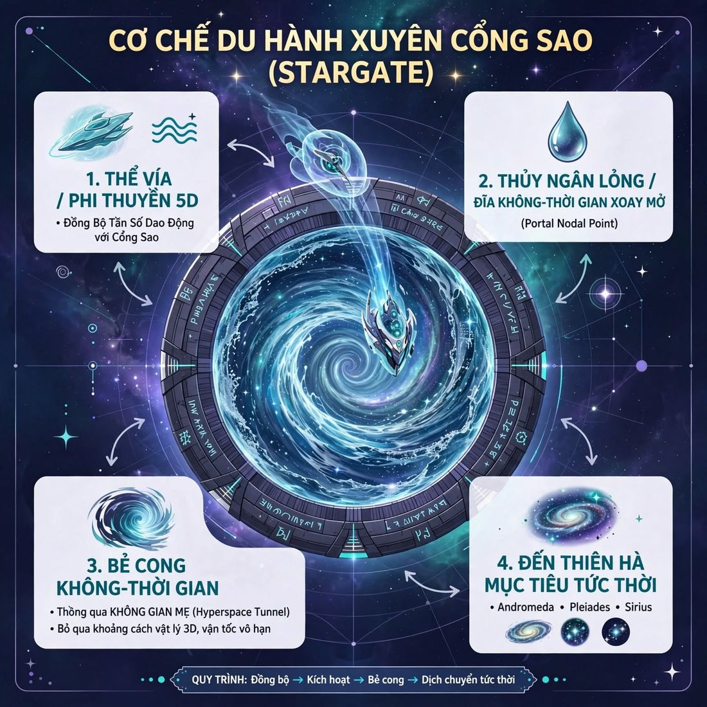
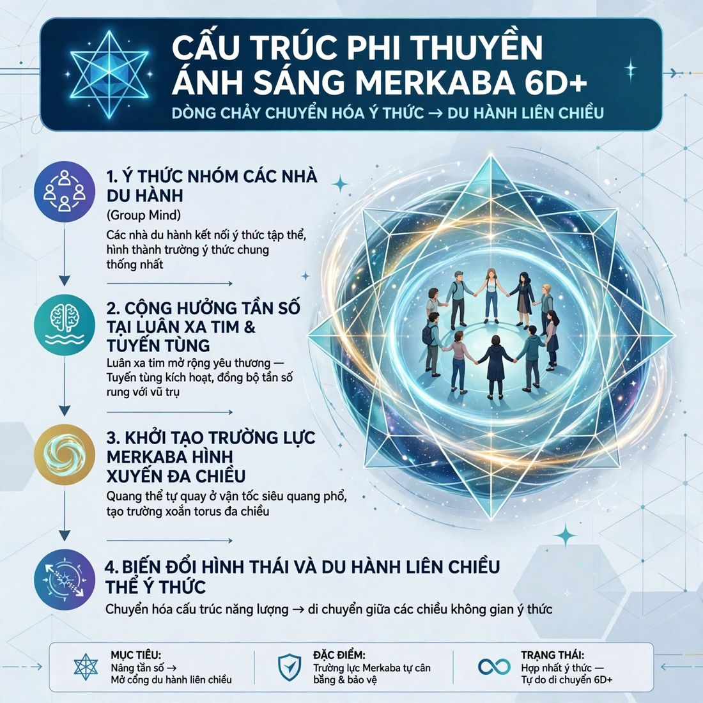
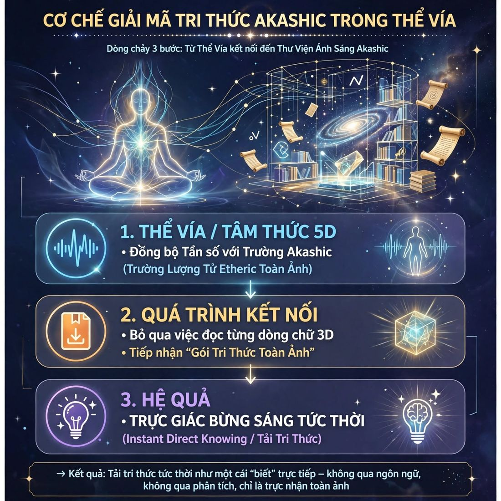
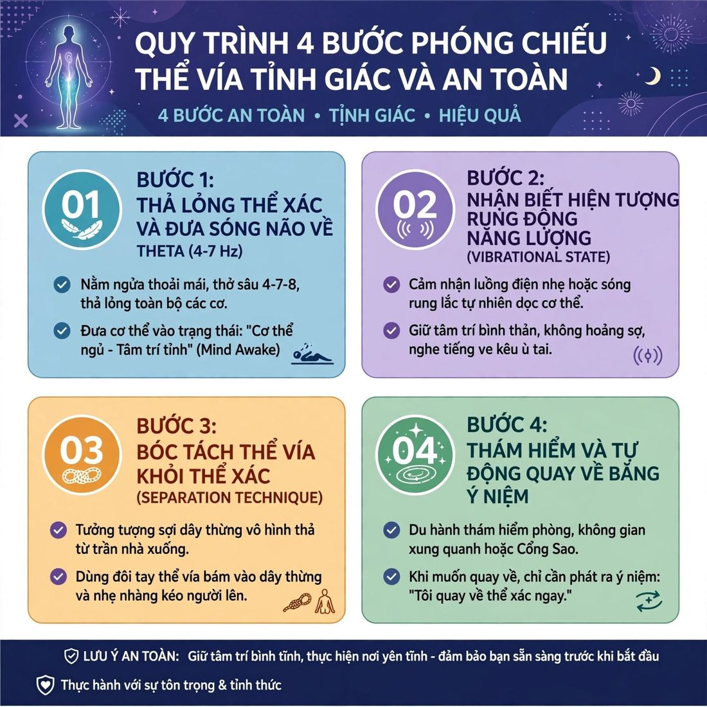

Trang chủ / Chuyên đề 9: Cẩm Nang Tâm Thức Vũ Trụ / Kỳ 89
Chuyên đề 9 · Kỳ 89 / 100
DU HÀNH PHÓNG CHIẾU THỂ VÍA (ASTRAL PROJECTION) & PHI THUYỀN ÁNH SÁNG MERKABA

1. Khoa Học Phóng Chiếu Thể VÍA (Astral Projection) & Sợi Dây Bạc (Silver Cord)
Trong các bộ môn khoa học lượng tử và tri thức siêu hình thiên hà, Phóng chiếu Thể vía (Astral Projection / Out-of-Body Experience - OBE) không phải là hiện tượng dị đoan hay ảo giác ảo tưởng. Đây là một bộ môn khoa học sinh học lượng tử hoàn toàn tự nhiên, trong đó Thể Tâm Thức (Astral Body / Etheric Vehicle) tạm thời bóc tách rời khỏi thể xác vật lý 3D để du hành và trải nghiệm trong các dải mật độ tần số cao hơn (4D/5D).
Sợi Dây Bạc (Silver Cord) – Cầu Nối Lượng Tử Vĩnh Hằng
Khi thể vía bóc tách khỏi thể xác, hai thể này luôn được nối liền với nhau bằng một sợi cáp năng lượng dĩ thái gọi là Sợi Dây Bạc (Silver Cord).
Sợi Dây Bạc xuất phát từ Luân xa Tim hoặc Tuyến Tùng của thể xác kết nối trực tiếp với Luân xa Tim của thể vía.
Sợi dây này mang bản chất là một đường dẫn sóng vô hướng lượng tử vô hạn, cho phép truyền tải tức thời các tín hiệu sinh tồn và nhịp đập sự sống giữa hai thể.
Dù thể vía du hành xa đến hàng triệu năm ánh sáng hay đi qua các Cổng Sao liên chiều, Sợi Dây Bạc không bao giờ bị đứt hay giãn nới quá mức. Thể vía có thể lập tức quay trở lại thể xác chỉ trong một phần nghìn giây khi thể xác gặp nguy hiểm hoặc khi có ý định thức dậy.
Sự Phân Biệt Giữa Giấc Mơ Thường Và Phóng Chiếu Thể Vía Tỉnh Giác
Giấc Mơ Thường (Standard Dreaming): Là quá trình não bộ xử lý các dữ liệu cảm xúc và tâm lý còn đọng lại trong ngày. Thần kinh ở trạng thái thụ động, cá nhân không có ý thức kiểm soát và thường quên ngay khi tỉnh dậy.
Phóng Chiếu Thể Vía Tỉnh Giác (Conscious Astral Projection): Cá nhân hoàn toàn giữ được ngọn đăng tỉnh giác có ý thức (Mind Awake, Body Asleep). Bạn nhận biết rõ ràng mình đang rời khỏi thể xác, có thể nhìn thấy thể xác đang nằm trên giường, tự do điều hướng chuyển động, đi xuyên tường và thám hiểm các không gian đa chiều với mức độ chân thực cao gấp nhiều lần thực tại 3D.

2. Du Hành Qua Cổng Sao (Stargates) & Thám Hiểm Không Gian Mẹ (Hyperspace)
Khi ở trong thể vía hoặc cơ thể quang thể 5D, phương thức di chuyển giữa các hệ sao không phụ thuộc vào các động cơ đốt nhiên liệu hay tên lửa thô 3D. Các sinh mệnh thiên hà và nhà du hành thể vía sử dụng Hệ Thống Cổng Sao (Stargates / Portals) và Không Gian Mẹ (Hyperspace / Etheric Field).
Cổng Sao là các mắt nút từ trường tự nhiên (hoặc nhân tạo) nơi cấu trúc không-thời gian bị bẻ cong tới mức cực đại. Khi thể vía hoặc phi thuyền 5D đi vào trung tâm Cổng Sao, dải tần số của thể du hành sẽ được đồng bộ hóa với tần số của Cổng Sao, cho phép cá nhân lướt đi trong Không Gian Mẹ (Hyperspace Tunnel) và xuất hiện tại hệ sao mục tiêu ngay lập tức.
Trong Không Gian Mẹ, khái niệm khoảng cách tuyến tính hoàn toàn vô hiệu. Việc đi từ Trái Đất tới cụm sao Pleiades (cách 444 năm ánh sáng) hay tới thiên hà Tiên Nữ M31 (cách 2,5 triệu năm ánh sáng) đều diễn ra trong cùng một khoảnh khắc đồng bộ tần số.

3. Phi Thuyền Ánh Sáng Merkaba 6D+ (Tự Quay Bằng Ý Thức Nhóm)
Ở các nền văn minh tiến hóa từ dải 6D trở lên (như Arcturus, Zenae Andromeda hay các Đấng Sáng Lập Paa-Taal), khái niệm "phi thuyền" không còn mang ý nghĩa là các vỏ kim loại máy móc thô cứng. Họ sử dụng Phi Thuyền Ánh Sáng Merkaba (Organic Light-Craft / Consciousness Merkaba).
Phi Thuyền Ánh Sáng Merkaba được tạo ra khi một nhóm các sinh mệnh cùng ngồi thiền định, hợp nhất ý thức tập thể thông qua Luân xa Tim và Tuyến Tùng.
Trường hào quang kết hợp của họ bùng nổ thành một đĩa cầu ánh sáng Merkaba siêu lớn có khả năng bao bọc toàn bộ đoàn du hành.
Phi thuyền này hoàn toàn là một sinh mệnh sinh học lượng tử thuần khiết, phản hồi trực tiếp với suy nghĩ và ý định của người điều khiển.
Phi thuyền Merkaba có thể biến mất khỏi 3D, đi xuyên qua lòng các ngôi sao hay lỗ đen và tự tái định hình cấu trúc tại bất kỳ mật độ tần số nào.
Cấu trúc hình học của phi thuyền Merkaba ánh sáng tự cân bằng bằng cách điều chỉnh tốc độ xoay của hai tứ diện âm dương. Khi đạt tới tần số rung động siêu giới hạn, phi thuyền không chỉ dịch chuyển trong không gian mà còn có thể nhảy vọt qua các mốc thời gian khác nhau trong Đa vũ trụ.

4. Truy Cập Thư Viện Tri Thức Vũ Trụ (Akashic Records) & Instant Direct Knowing
Một trong những đặc quyền tuyệt vời nhất khi du hành trong dải thể vía và tần số 5D là khả năng kết nối trực tiếp với Thư Viện Tri Thức Vũ Trụ (Akashic Records).
Trường Akashic không phải là một ngôi nhà hay một thư viện sách giấy theo nghĩa 3D. Đó là trường dữ liệu lượng tử Etheric lưu trữ trọn vẹn mọi sự kiện, tư tưởng, cảm xúc và lịch sử di truyền của tất cả các sinh mệnh trong Đa vũ trụ từ khởi thủy.
Khi thể vía ở trạng thái tần số Gamma cao:
Bạn không cần phải mở từng trang sách hay đọc từng lời nói thầm.
Khi hướng sự chú ý đến một câu hỏi (Ví dụ: "Lịch sử Atlantis diễn ra như thế nào?"), trọn vẹn tệp dữ liệu toàn ảnh về sự kiện đó sẽ lập tức đổ về Tuyến Tùng.
Bạn trải nghiệm hiện tượng Instant Direct Knowing (Sự Hiểu Biết Trực Giác Tức Thời) — bạn hiểu trọn vẹn bối cảnh, cảm xúc và bài học của sự kiện đó chỉ trong một khoảnh khắc ngắn ngủi.
Thông tin tiếp nhận từ trường Akashic mang tính chân thực tuyệt đối vì nó ghi lại năng lượng nguyên thủy của sự kiện chứ không qua lăng kính bóp méo của bất kỳ sử gia hay góc nhìn cá nhân 3D nào.

5. Quy Trình 4 Bước Thực Hành Phóng Chiếu Thể VÍA Tỉnh Giác & An Toàn
Không cố gượng ép: Giữ nhịp thở chậm, thả lỏng toàn bộ các cơ mặt.
Tập trung vào đầu ngón chân: Nhúc nhích nhẹ đầu ngón chân vật lý để tín hiệu điện thần kinh kéo thể vía quay về gắn kết hoàn hảo với thể xác.

6. Kết Luận: Tự Do Thám Hiểm Đa Vũ Trụ Bằng Bản Thể Ánh Sáng
Phóng chiếu thể vía và du hành bằng phi thuyền Merkaba không phải là những viễn tưởng phi thực tế. Đó chính là Khả Năng Vận Hành Tự Nhiên Của Thể Tâm Thức Siêu Chiều đã được cài đặt sẵn inside mỗi con người Trái Đất.
Khi bạn vượt qua nỗi sợ hãi và làm chủ được kỹ thuật bóc tách thể vía:
Bạn hoàn toàn chứng thực được sự thật: Linh hồn bất tử và không bị trói buộc bởi thể xác vật lý 3D.
Bạn thoát khỏi ảo tưởng về cái chết và sự cô lập không gian.
Bạn tự do thám hiểm Đa vũ trụ, truy cập kho tàng tri thức Akashic và học hỏi trực tiếp từ các nền văn minh thiên hà tiên tiến.
Hãy thả lỏng thể xác, giữ vững ngọn đăng tỉnh giác trong tâm trí và sẵn sàng cho những chuyến du hành kỳ vĩ cùng bản thể ánh sáng của bạn!